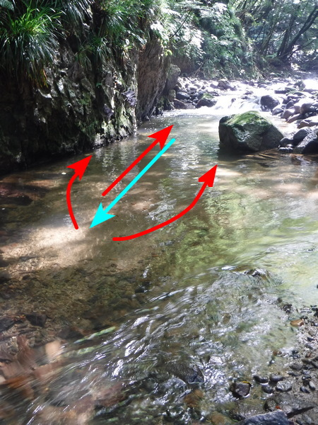
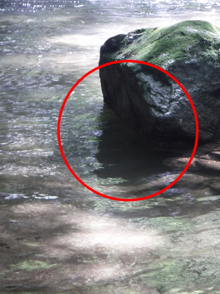
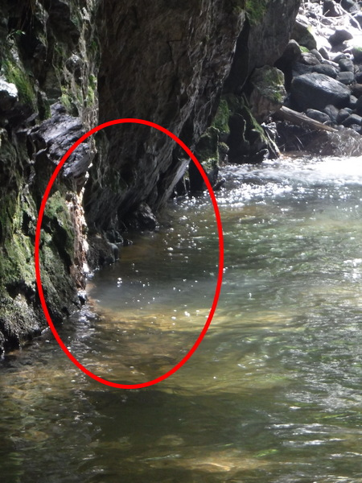
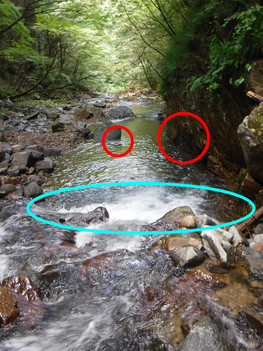
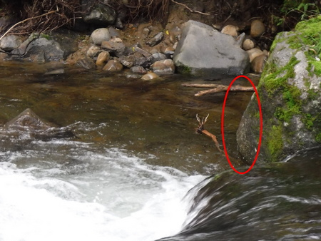
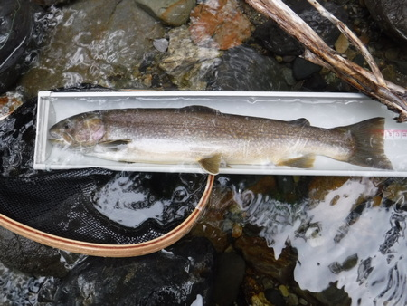
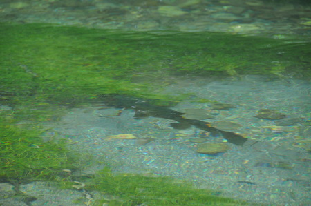
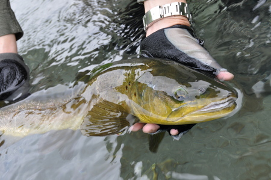

ティップス
釣りの最中に ５分待てますか？ 魚に見切られた場合の対処
ルアーや毛鉤などを追って来た魚がプイッと見切ってUターンしてしまった時に、あなたならどうします？ すぐに同じルアー、毛鉤をキャストしますか？ 数回やって出なかったらあきらめますか？
良型が次から次へと出るような川なら、次のポイントへ進むことも良いでしょう。(笑) 小物なら良いのですが、ひょっとして、生涯の大物クラスだったとしたら、むざむざ見捨てるのはあまりにもったいないと思います。
見切られたときに、どうしたら良いか
- すぐに同じルアー、毛鉤をキャストしないこと。かえって警戒されてしまいます。５分も待つのは長いと思われるでしょうが、５分間、じっと待って、以下のことを行います。５分間呼吸を止めていられる人はめったにいないと思いますが、これらのことは誰にでも出来て、これまで釣れなかった魚が釣れる可能性が高まります。
- 見切った魚がどこへ戻ったかを、しっかり観察しておく
魚は、出てきたポイント、あるいは見切ってUターンしたポイントから、下流側に下り、そこで隠れるか、付近に定位し直している場合があります。再度攻めるときには、そこを意識してルアー・毛鉤を流します。５分待てば、ほぼ、元出たポイントに戻っているか、警戒心を解いているはずです。

水色のラインのように付いて来て、見切った魚がどこへ戻ったか（赤色のライン）を、しっかり観察しておくこと
石の下か？
崖下のエグレか？ - どういった感じで見切られたかを考える
興味本位でフラフラ付いて来ただけの場合：ルアー、毛鉤を素早く追って、喰い付くだけの食欲、体力が無かった可能性があります。
対処方１：ルアー、毛鉤を替える。タイプ→小型のスピナー・スプーン
大方の人が、ミノーイング、ミノーイングと言って、魚を釣ることではなく、ミノーを使うことが目的となってしまっているような気がします。
そのため、他の人があまり使っていない、スピナーなどの方が効く場合があります。
フライについては、ニュージーランドの名ガイド、ブリント・トロレイさんは、「同じフライを２度流して喰わなかったら、別のフライに交換すること」と言っておりました。
対処方２：ルアー、毛鉤の色について、がらりと系統を変えてみる。
対処方３：アクション、リトリーブスピードを変える。第１投がゆっくりだったなら速く。速かったならゆっくりめにしてみる。ドライフライを使っていたのだったら、ニンフやストリーマーを使う手があります。 - 大物が掛かったら、どこでランディングするかを考えておく
５分間待っている間に、ファイト中に障害となりそうな沈木､岩、立木などを確認しておく。 - ライン、リーダーの傷をチェックし、少しでも傷があれば交換する。
- 太いラインが巻いてあるスペアスプールを持っていれば、そちらに交換する。
- ルアー交換の際には、丁寧に、しっかり結び直す。
ルアー・フライを結び直す。スイベルを使っている場合、スイベルを結び直す。 - ドラグの調節をしておく
- フッキングしてファイトしてからバラした場合には見込みは薄いと思われます。しかし「ガジッ」とフックに触れたくらいなら、10分以上待って、魚の警戒心を解きます。魚としては、今さっき咥えて違和感を覚えた物体（ルアー、毛鉤）が、よもや自分を釣り上げる罠だとは思っていないでしょう。ちょっと沢ガニに似た堅い歯触りだったなぁくらいにしか思ってないのではないでしょうか？
ルアー、毛バリを替えてから再度挑んでみましょう。岩魚の場合、アクションを付けすぎて､食いそこなったか、リトリーブが速すぎた可能性もあるので、再度挑むときには、ゆっくりしたストップアンドゴーを試してみる。経験上、大物の岩魚ほど、捕食動作が鈍く、鈍くさい傾向があるように思われます。 - これは、最初に述べたことと反対になってしまいますが、大物岩魚は、10回、20回としつこくルアーを見せつけてやると、じれったくなったり、イラついて喰ってくることがあるので、あきらめずに粘ることも必要です。
このしつこい焦らし戦法は叔父の得意技です。（笑）
追ってきた魚に、自分の姿を見られた場合
対処方１：これは、普段からの心がけが必要ですが、とにかく川歩きを慎重に行い、「木化け・石化け」を実践しておくしかありません。
対処方２：いったん最初の立ち位置を変えて、上流側、あるいは下流側に回り込む。この場合、よくよく注意して､姿勢は極端に低くして、静かに回り込むようにします。歩く時に足音・水音・石の音が立つようではオシマイ.....。
川原が有り、大回りできる場合は､草むらや葦などをかき分けてでも、魚が出たホットスポットから見えないルートで回り込む。
上流側に回り込んだとしたら、直下にキャストするダウン、あるいはダウン・アンド・アクロスで、ゆっくりと、さっき見切った魚にルアーを見せてやります。その時には、観察しておいた、魚が戻ったであろうポイント（赤丸）をしっかり引きます。
この場合、フローティング、あるいはインターミディエートのミノーが効きます。また、小型のスピナー、スプーンも、長くその場に留められるので有効です。単価が安いので、あまりメディアでは語られませんが。(笑)
岸際のボサ、葦の根などの際ぎりぎりも、ゆっくりとしたリトリーブ、ロッドアクションで通し、しっかりと魚にアピールします。

流れ込みのギリギリ（水色丸）まで油断せずに攻めてみます。
待っている５分間にしておくこと
わずかにフックに触って、フッキングしなかった場合
これは、大石裏からフラッと出てきて引き返した岩魚を、10分くらい待ってから、ルアーを交換してゆっくり引いてキャッチしたポイントです。




ティップス 目次へ
サイトマップ
ホームへ
お問い合わせ